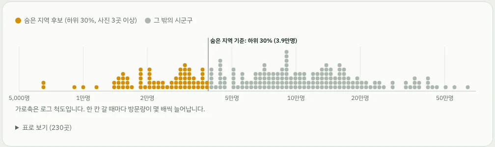

한국관광공사_빅데이터_지역별 방문자수_GW
한국관광공사 · 기존 명칭 관광빅데이터 정보서비스
- 수집 항목
- 기초 지자체 일별 방문자 수 (locgoRegnVisitrDDList): 시군구 코드, 날짜, 관광객 구분(현지인·외지인·외국인), 방문자 수
- 수집량
- 2026년 8월 2일~31일, 시군구 269개, 24,208행
관광빅데이터로 ‘사람들이 덜 가는 곳’을 먼저 찾아주는 역발상 여행 서비스
숨은여행지도는 전국 230개 시군구의 최근 30일 방문량을 지도 색으로 보여줍니다. 연하게 칠해진 곳, 즉 방문이 적은 지역을 누르면 그 지역의 관광지와 사진이 나타납니다.
데이터 분석 페이지: hidden-travel-map.vercel.app/analysis.html
API 서버(Render 무료)는 한동안 요청이 없으면 잠듭니다. 첫 응답에 30초쯤 걸릴 수 있습니다.
노란 점은 전국에서 방문이 가장 적은 숨은 지역 후보 5곳입니다. 하나를 골라 보세요.
수업에서 요청한 발표 항목을 아래 순서로 담았습니다.
대부분의 여행 서비스는 많이 찾는 곳부터 보여줍니다. 그래서 인기 지역은 더 붐비고, 볼거리가 있어도 덜 알려진 지역은 계속 뒤로 밀립니다.
숨은여행지도는 거꾸로 묻습니다. 사람이 적게 가는 곳 가운데 실제로 가볼 만한 곳은 어디일까? 붐비는 여행지에 지친 사람, 남들이 잘 모르는 곳을 찾는 사람을 위한 서비스입니다.
사람은 적게 가지만,
볼 것은 있습니다.
데이터 활용 기획 시나리오
주말이나 연휴에 국내 여행을 떠나는 직장인. 유명한 곳은 어디를 가도 사람이 많아 지쳤습니다.
여행 앱과 SNS는 인기 순으로 보여줍니다. 덜 알려진 지역은 정말 한산한지, 가볼 만한 곳이 있는지 판단할 근거가 없습니다.
실제 방문 데이터로 ‘덜 가는 곳’을 고르고, 관광지 사진으로 ‘볼 것이 있는지’를 같은 화면에서 확인합니다.
230개 시군구를 최근 30일 외지인·외국인 방문량으로 칠합니다. 연할수록 사람들이 덜 가는 곳입니다.
관광빅데이터SGIS 경계GET /regions
방문량 하위 30%이면서 사진 있는 관광지가 3곳 이상인 69곳이 지도 위 목록에 떠 있습니다.
관광빅데이터TourAPIGET /hidden
영양군을 누르면 하루 평균 6,432명, 전국 230곳 가운데 방문 적은 순 1위라고 알려줍니다.
관광빅데이터GET /regions
같은 화면에 그 지역 관광지 사진 6장이 나옵니다. 사람은 적어도 볼 것은 있다는 걸 바로 확인합니다.
TourAPIGET /regions/{code}/attractions
같은 데이터를 다르게 쓰는 두 번째 사용자는 지자체입니다. “우리 지역은 전국에서 몇 번째로 덜 찾는 곳인가, 외지인은 늘고 있는가”를 같은 API로 답할 수 있습니다. 비즈니스 모델에서 이어집니다 →
주요 페이지 및 기능
세 화면 모두 실제 DB 값으로 그립니다. 이미지를 누르면 크게 볼 수 있습니다.
화면 속 관광지 사진 출처: 한국관광공사 (공공누리). 캡처일 2026년 10월 4일.
| 페이지 | 주요 기능 | 부르는 API |
|---|---|---|
| 지도index.html |
|
/regions/hidden/regions/{code}/attractions/stats/overview |
| 데이터 분석analysis.html |
|
/stats/overview/stats/sido/regions |
| API 문서/docs | Pydantic 응답 모델로 입력값과 응답 형식을 정의해 Swagger UI에 자동으로 나타냅니다. | 7개 전부 |
발표 5분 전에 /health를 한 번 열어 서버를 깨워 둡니다.
GET /hidden을 직접 실행해 같은 결과가 API로 나오는 것을 보여줍니다.15초목업의 수치와 지역 정보는 예시 데이터입니다.
서비스 아키텍처
외부 API는 수집기만 부릅니다. 화면은 우리 API만 부르고, 우리 API는 DB만 읽습니다. 그래서 외부 API가 느리거나 막혀도 서비스는 그대로 동작하고, 인증키는 화면에 드러나지 않습니다.
점선은 외부 기관이 제공하는 부분, 실선은 팀이 만든 부분입니다. SGIS 경계는 매일 바뀌지 않아 DB를 거치지 않고 정적 파일로 화면에 바로 넣습니다.
수집기를 실행할 때 (배치)
visitor_daily에 저장합니다. 같은 날을 다시 받아도 기본키 덕분에 중복되지 않습니다.visitor_summary에 씁니다.attractions에 저장합니다.사용자가 화면을 열 때마다
GET /regions를 부르고, FastAPI가 Supabase에 SQL을 보내 230곳 요약을 JSON으로 돌려줍니다./regions/{code}/attractions로 사진을 받아 옵니다.GitHub main 브랜치 기준
.env와 Render 환경변수에만 둡니다.사용 데이터 및 출처
서비스에는 한국관광공사 API 두 개와 SGIS 경계를 씁니다. 비즈니스 모델 분석에는 행정안전부 인구감소지역 명단을 더했습니다.
한국관광공사 · 기존 명칭 관광빅데이터 정보서비스
한국관광공사 · KorService2
국가데이터처 통계지리정보서비스
행정안전부 · 비즈니스 모델 분석에만 사용
TourAPI 사진은 공공누리 제1유형(출처표시) 또는 제3유형(출처표시+변경금지)입니다. 화면에 “사진 출처: 한국관광공사”를 표시하고 사진을 자르거나 고치지 않습니다.
세 데이터가 같은 시군구를 서로 다른 코드로 부릅니다. region_master 테이블 한 행에 세 코드를 모아 연결했습니다.
| 데이터 | 서울 종로구 | 수원시 장안구 | 인천 제물포구 |
|---|---|---|---|
| 관광빅데이터 | 11110 | 41111 | 28125 |
| TourAPI 법정동 | 11+110 | 41+111 | 28+125 |
| SGIS 2025 | 11010 | 31011 | 없음 |
| 처리 | 그대로 연결 | 일반구라 수원시(41110)로 합침 | 2026년 새로 생긴 구. 읍면동 경계를 합쳐 만듦 |
관광빅데이터에는 시와 그 일반구가 함께 들어 있어(수원시와 장안구 등) 그대로 순위를 매기면 이중으로 셉니다. 일반구 39개를 상위 시로 합쳐 269개를 시 단위 230개로 정리했습니다.
Ghost Index = 100 − 방문량 백분위
숨은 지역 후보 = 방문량 하위 30% 이면서 사진 있는 관광지 3곳 이상. 기획안의 20%(46곳)와 30%(69곳) 가운데 고를 거리가 넉넉한 30%로 정했습니다. 기준값은 코드 한 곳(backend/app/rules.py)에서 관리합니다.
팀이 탐색용으로 정의한 지표이며 관광지의 가치를 평가하는 점수가 아닙니다. 절대 방문량을 쓰므로 인구와 면적이 작은 군이 위로 옵니다 (후보 69곳 중 60곳이 군).
데이터 분석·정리 결과
분석 페이지의 주요 결과입니다. 기준은 2026년 8월 2일~31일, 시 단위 230곳입니다.
0.06
사진 있는 관광지 수와 방문량(둘 다 로그)의 상관계수가 0.06입니다. 방문 하위 20% 지역의 관광지 수 중앙값은 61곳으로 상위 20% 지역(66곳)과 비슷합니다. “사람은 적게 가지만 볼 것은 있다”의 근거입니다.
98배
하루 외지인·외국인 방문이 영양군 6,432명부터 강남구 631,565명까지 벌어집니다. 중앙값은 74,078명이고, 숨은 지역 기준인 하위 30% 경계는 하루 38,685명입니다.
55.8%
지역별 현지인 비중은 서울 중구 22.1%부터 거제시 75.2%까지 다릅니다. 주민이 많은 곳일수록 방문량이 부풀기 때문에 외지인과 외국인만 더해 ‘여행 방문’에 가깝게 봅니다.
15곳
후보가 가장 많은 곳은 전남광주통합특별시 15곳, 경북 13곳, 경남과 전북 10곳입니다. 서울·부산·인천·대전·울산·세종·제주에는 후보가 없습니다.

비즈니스 모델
숨은 지역 후보는 대부분 방문객을 늘리는 것이 정책 과제인 지자체입니다. 여행자에게는 무료로 제공하고, 지자체와 협업해 운영비와 수익을 만듭니다.
64/ 69곳
숨은 지역 후보 69곳 중 64곳(93%)이 행정안전부 지정 인구감소지역입니다
전체 230곳 중 인구감소지역은 39%인데, 후보 안에서는 93%입니다. 나머지 5곳은 계룡시, 증평군, 홍성군, 예천군, 동두천시(인구감소 관심지역)입니다.
인구감소지역 64곳그 밖 5곳
「인구감소지역 지원 특별법」(2023년 시행)은 주민등록 인구에 통근·관광 등으로 머무는 사람까지 더한 ‘생활인구’를 늘리는 것을 정책 목표로 둡니다. 우리 서비스가 보내는 외지인 방문객이 바로 그 체류 인구입니다.
인구감소지역에는 지방소멸대응기금(2022년부터 10년간 매년 1조 원 규모) 같은 관광·체류 사업 재원이 있습니다. 홍보 채널과 성과 측정 수단을 찾는 수요가 분명합니다.
협업 전후 외지인·외국인 방문량을 같은 관광빅데이터로 비교할 수 있습니다. 지자체가 사업 성과 보고에 그대로 쓸 수 있는 숫자입니다.
| 대상 | 제공 가치 | 우리가 얻는 것 |
|---|---|---|
| 지자체 관광 부서주 고객 · 지역관광추진조직 포함 | ‘데이터로 뽑힌 숨은 여행지’라는 노출, 우리 지역 방문량 리포트, 캠페인 성과 측정 | 공동 캠페인 사업비, 리포트 구독료 |
| 여행자사용자 · 무료 | 붐비지 않는 여행지를 데이터로 고르고 사진으로 확인 | 방문 트래픽 (지자체 협업의 근거) |
| 한국관광공사 등파트너 | 공공데이터 활용 사례, 관광 수요를 지역으로 분산하는 정책과 연결 | 데이터 제공, 공모·지원 사업 연계 |
후보 지자체와 함께 지역 소개, 추천 코스, 축제 일정을 묶어 첫 화면과 SNS에 소개합니다. 지자체 관광 홍보 예산으로 집행하는 위탁·공모 사업입니다.
성과는 캠페인 전후 외지인 방문량 변화로 보고합니다.
우리 지역 방문량 추이, 전국과 같은 도 안에서의 순위, 외지인·외국인 구성, 비슷한 지역과의 비교를 월간 리포트와 대시보드로 제공합니다.
지금의 /stats API와 분석 페이지가 원형입니다.
지자체가 TourAPI에 관광지 사진과 정보를 보강하면 다음 수집 때 자동으로 반영됩니다. 사진이 많을수록 지역 상세가 풍부해집니다.
지역 상세에서 지자체의 한달살기·고향사랑기부 안내로 이어 방문을 체류로 바꿉니다.
Ghost Index와 후보 선정은 공공데이터로만 계산하고 협업 여부와 무관하게 둡니다. 유료 협업은 순위가 아니라 소개 콘텐츠와 리포트에만 적용합니다. 그래야 여행자가 믿고 쓰고, 지자체에게도 ‘데이터로 뽑힌 곳’이라는 홍보 가치가 남습니다.
API 설명 문서
모두 읽기 전용 GET이고 JSON으로 응답합니다. 같은 내용을 Swagger UI에서 직접 호출해 볼 수 있습니다.
기본 주소 https://hidden-travel-map-api.onrender.com인증 없음 (공개 읽기 전용)CORS 모든 출처의 GET 허용
| 엔드포인트 | 기능 | 입력값 | 응답 형식 |
|---|---|---|---|
GET /health | 서버와 DB 연결 확인 | 없음 | Health {status, db}DB 연결 실패 시 503과 원인 힌트 |
GET /regions | 전국 시 단위 230곳 방문량 요약. 지도 색칠에 씁니다 | 없음 | RegionSummary[] 230개 |
GET /regions/{code} | 선택 지역 하나의 방문량 요약 | code (경로) 관광빅데이터 시군구 코드. 예 47760 | RegionSummary없는 코드나 일반구 코드는 404 |
GET /regions/{code}/attractions | 선택 지역의 사진 있는 관광지 | code (경로) limit (쿼리) 1~50, 기본 6 | Attraction[]관광지 유형 먼저, 이름순 |
GET /hidden | 숨은 지역 후보. Ghost Index 높은 순 | max_percentile 0~100, 기본 30 min_attractions 기본 3 limit 1~230, 기본 20 | RegionSummary[] |
GET /stats/overview | 분석 페이지용 전국 요약 | 없음 | StatsOverview수집 현황, 관광객 구성, 방문량 분포, 후보 수, 상관계수 |
GET /stats/sido | 시도별 방문량·관광객 구성·후보 수 | 없음 | SidoStats[] 시도 16개 |
GET /regions/47760
{
"code": "47760",
"sido_nm": "경상북도",
"signgu_nm": "영양군",
"sgis_code": "37540",
"window_start": "2026-08-02",
"window_end": "2026-08-31",
"avg_daily_visitors": 6432.4,
"percentile": 0.0,
"ghost_index": 100.0,
"attraction_count": 22,
"is_candidate": true
}
GET /regions/47760/attractions?limit=1
[
{
"content_id": "126745",
"title": "국립검마산자연휴양림",
"category": "관광지",
"address": "경상북도 영양군 수비면 한티로 1050",
"lat": 36.7620547345398,
"lon": 129.25535013202,
"image_url": "https://tong.visitkorea.or.kr/cms/resource/93/3526493_image2_1.jpg",
"image_license": "Type3"
}
]
DB 테이블 문서
Supabase PostgreSQL에 있습니다. 모든 테이블이 region_master의 region_id를 외래키로 가리킵니다. 정의와 주석은 저장소의 db/schema.sql에 있습니다.
세 데이터의 서로 다른 시군구 코드를 한 행으로 잇습니다. 수집기는 이 표에 있는 지역만 저장합니다.
↺ 자기 참조 1 : N — 시 하나에 일반구 여럿 (수원시 → 장안구·권선구·팔달구·영통구)
관광빅데이터 원본을 지역·날짜·관광객 구분별로 저장합니다.
복합 기본키라 같은 날을 다시 수집해도 중복 저장되지 않습니다.
시 단위 지역마다 한 행. 수집 뒤 다시 계산합니다.
TourAPI 콘텐츠 중 대표 사진이 있는 것만 저장합니다.
보안: 네 테이블 모두 행 수준 보안(RLS)을 켜고 Supabase 공개 키(anon)의 권한을 회수했습니다. FastAPI와 수집기는 서버 쪽 계정으로만 접속합니다.
기획안에는 없던, 실제로 API를 불러 보고서야 알게 된 것들입니다.
원인관광빅데이터에 시와 그 일반구가 함께 있어(수원시와 장안구 등) 269개였고, 그대로 순위를 매기면 이중으로 셉니다.
해결일반구 39개를 상위 시로 합쳐 230개 시 단위로 순위를 매깁니다. parent_region_id로 관계를 남겼습니다.
원인광주·전남 통합(코드 12로 시작)과 인천 새 구 4곳이 방문 데이터에는 있는데 SGIS 2025 경계에는 없었습니다.
해결인천 새 구는 읍면동 경계를 받아 합쳐 직접 만들었습니다. 230곳 모두 지도에 나옵니다.
원인법정동 코드 체계로 바뀌면서 옛 지역 코드가 빈 콘텐츠가 많은데, 오류 없이 정상 응답으로 옵니다.
해결법정동 코드(lDongRegnCd, lDongSignguCd)로 조회합니다.
원인대표 사진 있는 순 정렬을 써도 서울 관광지 775건 중 50건은 사진이 없었습니다.
해결코드에서 대표 사진 주소로 한 번 더 거르고, http 주소는 https로 바꿔 저장합니다.
원인Supabase 새 프로젝트는 공개 REST API가 켜져 있고 RLS가 꺼져 있어, 공개 키로 테이블을 읽고 쓸 수 있었습니다.
해결스키마 파일에서 RLS를 켜고 공개 키 권한을 회수합니다. 다시 실행해도 안전하게 만들었습니다.
원인공공데이터포털 연결이 가끔 30초 넘게 끊기는데, 이때 오류에 인증키가 든 주소가 그대로 나왔습니다.
해결3번까지 재시도하고, 오류 메시지에서 주소를 뺐습니다.
이강훈
강재구
구대로
박주원
이재원
5주차 완료
API 키 세 가지 발급, 서울 종로구 한 곳을 수집부터 DB, API까지 끝까지 연결
6주차 완료
전국 지역 연결표 269행, 방문자 24,208행과 관광지 17,658곳 수집, 30일 집계와 Ghost Index, 핵심 API
7주차 완료
지도와 데이터 분석 페이지, Vercel·Render·Supabase 배포, GitHub push 시 자동 배포
8주차 지금
기능 동결, 이 페이지로 발표 정리, 1분 라이브 데모 반복
이번에는 AI 추천, 날씨, 맛집, 숙박, 여행 코스, 개인화를 넣지 않았습니다. 기획안의 키워드 검색(OpenSearch)과 매일 자동 수집은 다음 단계로 남겼습니다.